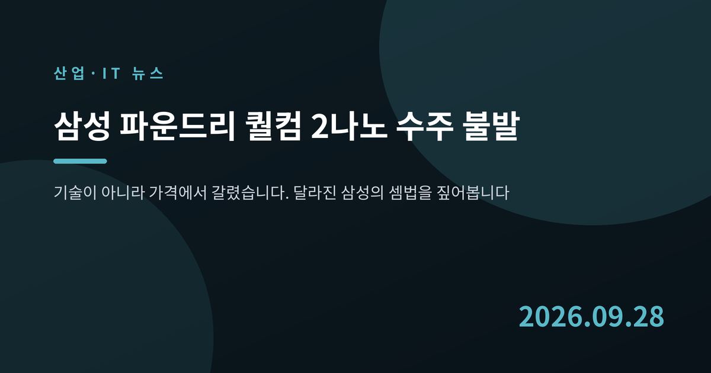
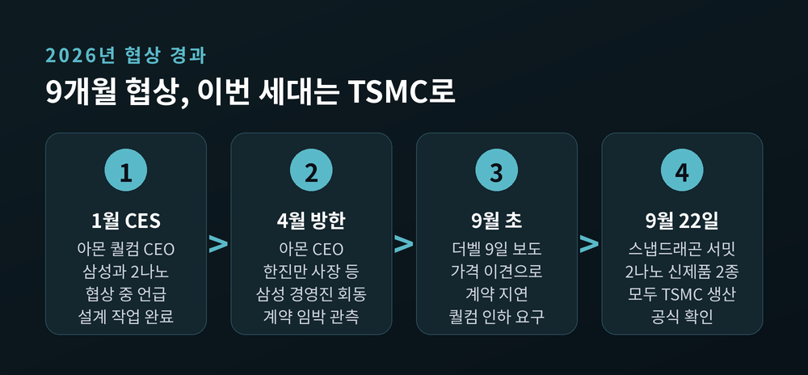
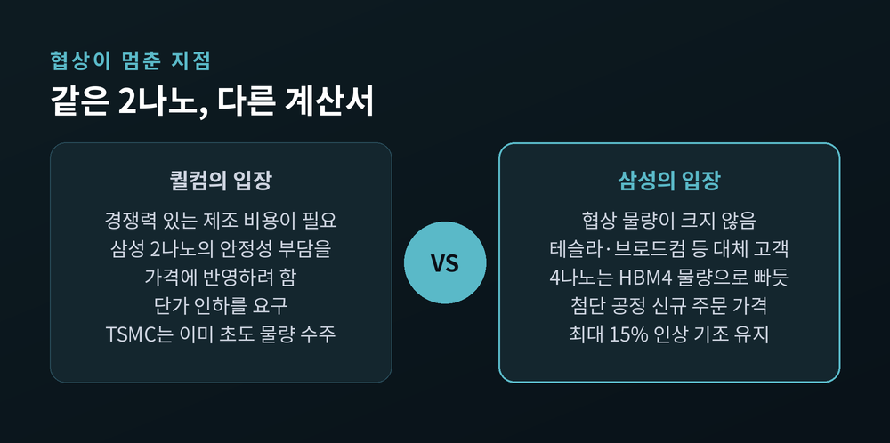
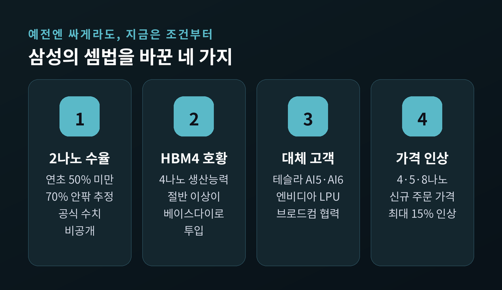
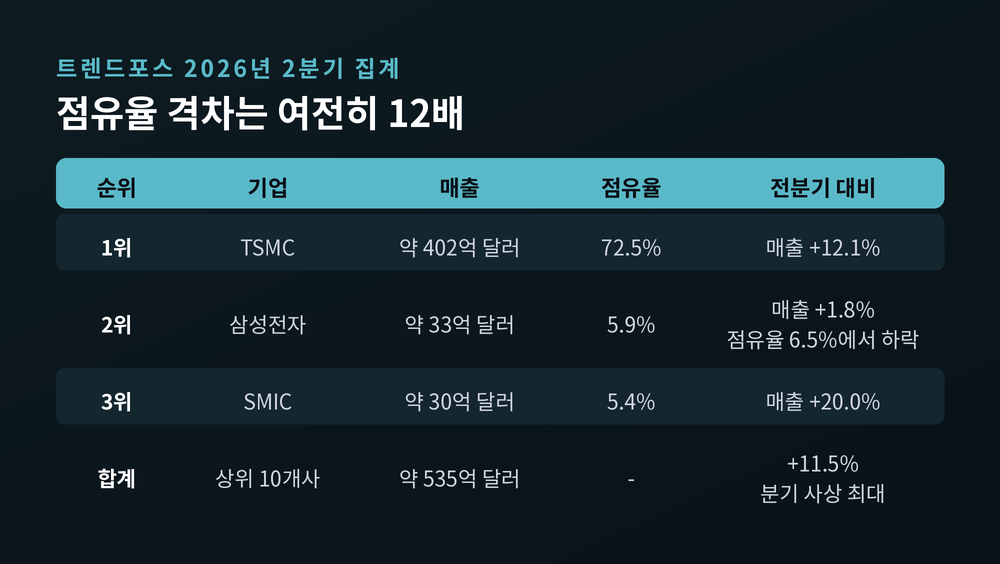
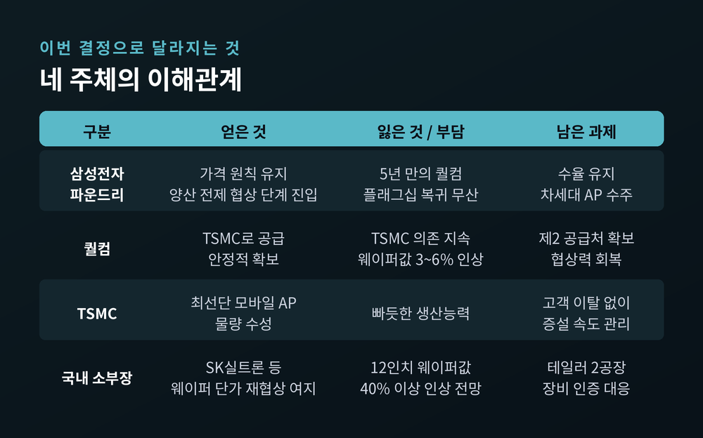
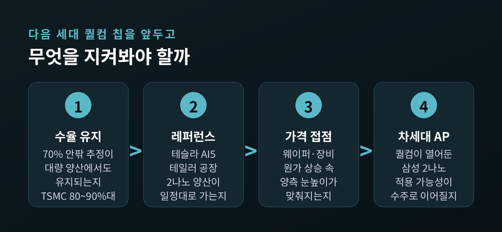

삼성 파운드리 퀄컴 2나노 수주 불발, 가격에서 갈린 이유

이번 글에서는 삼성전자 파운드리가 퀄컴의 2나노 모바일 AP 물량을 놓친 소식을 정리해 보겠습니다.
기술이 아니라 가격에서 협상이 멈췄다는 점, 그리고 그 배경에 달라진 삼성의 셈법이 있다는 점이 핵심입니다.
먼저 세 줄로 요약합니다.
- 퀄컴은 9월 22일 공개한 2나노 AP 2종을 모두 TSMC에서 생산한다고 밝혔습니다.
- 삼성과의 협상은 수율보다 가격에서 엇갈렸고, 삼성은 인하 요구를 받아들이지 않았습니다.
- 퀄컴은 삼성을 여전히 중요한 파트너로 부르며 다음 세대 가능성을 열어뒀습니다.
무슨 일이 있었나
9월 22일(현지시간), 하와이 마우이에서 '스냅드래곤 서밋 2026'이 열렸습니다.
퀄컴은 이 자리에서 스냅드래곤 8 엘리트 6세대와 6세대 익스트림을 공개했습니다.
두 제품 모두 2나노 공정입니다.
생산처를 묻는 질문에 크리스 패트릭 퀄컴 수석부사장이 답했습니다.
"오늘 발표한 2나노 제품 2종은 모두 TSMC에서 생산된다"는 내용이었습니다. (아이뉴스24, 9월 23일)
업계에서는 한때 삼성과 TSMC가 물량을 나눠 맡는 '듀얼소싱'까지 거론됐습니다.
뉴스핌은 9월 28일, 삼성이 막판까지 협상했지만 이번 세대 수주에는 이르지 못했다고 전했습니다.
같은 날 아이뉴스24는 차세대 AP를 두고 협상이 9개월째 이어지고 있다고 보도했습니다.
정리하면 이번 세대는 TSMC로 확정됐고, 삼성과의 논의는 다음 세대로 넘어간 모양새입니다.

왜 중요한가 — 5년 만의 재결합이 멈춰 섰습니다
퀄컴과 삼성 파운드리의 첨단 협력은 2021년 스냅드래곤 8 1세대가 마지막이었습니다.
당시 4나노 칩은 발열과 전력 효율 논란을 겪었습니다.
퀄컴은 2022년부터 플래그십 칩을 전량 TSMC에 맡겨 왔습니다. (디일렉, 9월 23일)
그래서 이번 협상은 단순한 한 건의 계약이 아니었습니다.
삼성 2나노가 대형 모바일 고객의 신뢰를 되찾았는지를 보여주는 시험대였습니다.
올해 1월 CES에서 크리스티아노 아몬 퀄컴 CEO는 삼성과 2나노 협상 중이며 설계 작업도 마쳤다고 밝혔습니다.
4월에는 방한해 한진만 삼성전자 파운드리사업부장을 만났습니다.
계약이 임박했다는 관측이 나온 것도 이때였습니다.
쟁점은 기술이 아니라 가격이었습니다
9월 9일 더벨은 양사의 계약이 가격 이견으로 지연되고 있다고 보도했습니다.
기술적 난관은 넘었지만, 퀄컴이 단가 인하를 요구했다는 내용입니다.
외신도 더벨을 인용해 같은 소식을 전했습니다. (Wccftech, 9월 11일)
양측의 논리는 이렇습니다.
- 퀄컴: 경쟁력 있는 제조 비용이 필요합니다. 삼성 2나노의 안정성 부담도 가격에 반영하려 했습니다.
- 삼성: 협상 물량이 크지 않습니다. 테슬라·브로드컴 등 다른 첨단 고객도 있어 굳이 값을 내릴 이유가 적습니다.
녹색경제신문에 따르면 삼성은 최근 첨단 공정 가격을 잇달아 올렸습니다.
4나노는 미국·중국 고객 대상 10~15%, 대만 고객 5~10%, 5나노 10~15%, 8나노는 약 10%입니다.
로이터 등은 7월 이후 일부 신규 주문 가격이 최대 15% 올랐다고 전했습니다.

삼성의 셈법은 왜 바뀌었나
예전엔 삼성이 값을 낮춰서라도 물량을 받아야 했습니다.
지금은 조건이 맞지 않으면 기다릴 수 있습니다.
이 변화에는 네 가지 이유가 있습니다.
첫째, 수율입니다.
뉴스핌은 삼성 2나노 수율이 연초 50% 미만에서 70% 안팎까지 올라왔다는 추정을 전했습니다.
다만 정확한 수치는 공개되지 않았고, 매체마다 추정치가 다릅니다.
자체 AP인 엑시노스 2600도 삼성 2나노로 만들어져 갤럭시 S26에 들어갔습니다.
그만큼 공정을 양산에서 검증할 기회가 있었던 셈입니다.
둘째, HBM4입니다.
삼성은 2월 업계 최초로 HBM4 양산과 출하를 시작했습니다. (아이뉴스24)
HBM4 아래층의 베이스다이는 삼성 4나노에서 만듭니다.
디지타임스는 4나노 생산능력의 절반 이상이 여기에 쓰인다고 보도했습니다.
한 업계 관계자는 "HBM4 물량을 맞추는 것만으로도 4나노 쪽은 상당히 빠듯하다"고 말했습니다.
셋째, 대체 고객입니다.
테슬라와는 약 165억 달러 규모 계약을 맺었습니다.
AI5는 미국 테일러 공장 2나노에서, AI6는 2나노 2세대 공정에서 생산될 예정입니다.
엔비디아의 추론용 '그록3 LPX'에 들어가는 LPU도 삼성 4나노에서 양산에 들어갔습니다. (뉴시스, 8월 26일)
브로드컴과는 2030년까지 2000억 달러 규모 협력 양해각서를 맺었습니다.
넷째, 가동률입니다.
삼성은 2분기 실적 발표에서 8나노 이하 선단 노드가 완전 가동 수준이라고 밝혔습니다.
공장이 비어 있지 않으니, 싼 주문으로 빈자리를 채울 필요도 줄었습니다.

그래도 격차는 여전히 큽니다
셈법이 달라졌다고 해서 판세가 바뀐 것은 아닙니다.
트렌드포스 집계로 2분기 TSMC 점유율은 72.5%, 삼성은 5.9%였습니다.
TSMC 매출은 약 402억 달러, 삼성은 약 33억 달러로 12배가 넘게 차이 납니다. (테크월드, 9월 11일)
삼성 점유율은 오히려 1분기 6.5%에서 떨어졌습니다.
매출은 1.8% 늘었지만 경쟁사 성장이 더 가팔랐습니다.
3위 SMIC는 20% 성장하며 5.4%까지 따라붙었습니다.
적자도 아직 남아 있습니다.
삼성은 파운드리 손익을 따로 공개하지 않습니다.
증권가는 파운드리를 포함한 비메모리 부문의 2분기 영업손실을 약 6000억원으로 추정합니다. (아시아투데이)
2분기 삼성 전체 영업이익 89조4000억원 가운데 약 84조원이 메모리에서 나왔습니다. (EBN)
수율도 아직 TSMC가 앞섭니다.
외신은 TSMC 동일 노드 수율을 80~90%대로 봅니다.
삼성이 가격을 지킬 수 있는 힘은 생겼지만, 격차를 좁힐 힘까지 생겼다고 보기는 이릅니다.

이해관계는 어떻게 갈리나
이번 결정으로 네 주체의 사정이 조금씩 달라집니다.
삼성은 한 건의 수주를 놓쳤지만 가격 원칙을 지켰습니다.
뉴스핌은 삼성 내부에서도 이번 불발을 부정적으로만 보지 않는다고 전했습니다.
최선단 AP에서 실제 양산을 전제로 가격을 논의하는 단계까지 왔다는 점에 의미를 둔다는 것입니다.
퀄컴은 당장의 공급은 안정적으로 확보했습니다.
다만 비용 부담은 커집니다.
TSMC는 내년 1월부터 웨이퍼 가격을 3~6% 올릴 것으로 알려졌습니다.
디일렉은 퀄컴이 삼성을 찾는 이유로 공급난 대응과 가격 협상력 강화를 꼽았습니다.
두 번째 공급처가 있어야 TSMC와의 협상에서도 목소리를 낼 수 있기 때문입니다.
TSMC는 최선단 모바일 AP를 또 한 번 지켰습니다.
생산능력이 빠듯한 상황에서도 고객이 쉽게 떠나지 못한다는 점을 다시 보여줬습니다.
국내 소재·부품·장비 업계에는 원가 변수가 겹칩니다.
트렌드포스는 2027년 12인치 웨이퍼 장기계약 단가가 폴리시드 제품 기준 40% 이상 오를 것으로 봤습니다. (글로벌이코노믹, 9월 27일)
국내 유일 12인치 웨이퍼 제조사 SK실트론에는 단가 재협상 여지가 생깁니다.
반대로 칩 제조사 입장에서는 원가 압박이 커집니다.
삼성은 테일러 2공장 장비 협력사에 안전 인증을 미리 준비해 달라고 요청한 것으로 알려졌습니다.
다만 퀄컴 물량이 국내 협력사 매출에 미치는 직접 효과는 확인된 자료가 없습니다.

앞으로 무엇을 봐야 하나
다음 시험대는 퀄컴의 차세대 AP입니다.
패트릭 부사장은 "훌륭한 기술력이 있다면 협력 가능성은 항상 있다"고 말했습니다. (디일렉)
삼성 2나노를 심도 있게 들여다보고 있다는 언급도 덧붙였습니다.
지켜볼 대목은 세 가지입니다.
- 수율: 70% 안팎이라는 추정이 대량 양산에서도 유지되는지
- 레퍼런스: 테슬라 AI5가 테일러에서 예정대로 양산에 들어가는지
- 가격: 웨이퍼·장비 원가가 오르는 가운데 양측이 접점을 찾는지
테일러 공장 일정은 보도마다 엇갈립니다.
AI5 생산을 11~12월로 본 보도도 있고, 9월 가동이 어렵다는 보도도 있었습니다.
신규 공장은 초기에 감가상각과 수율 안정화 비용이 함께 듭니다.
이 부분은 아직 낙관하기 어렵습니다.

정리하면 이렇습니다.
이번 불발은 삼성이 밀려난 이야기이면서, 동시에 삼성이 '거절할 수 있게 된' 이야기이기도 합니다.
"싸게라도 받던 파운드리에서, 조건을 따지는 파운드리로."
다만 조건을 따질 자격은 결국 수율과 양산 실적이 증명해 줘야 합니다.
이번 선택이 옳았느냐고 물으신다면, 그 답은 다음 세대 퀄컴 칩의 생산지가 알려줄 것이라고 생각합니다.